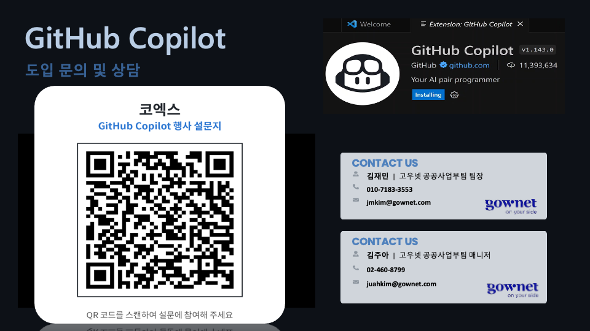

KHF 2026
AI 시대, 의료진도 직접 만드는 업무 혁신
AI Agent & GitHub Copilot으로 진료 · 연구 · 행정을 더 스마트하게
그 답이 맞는지, 어떻게 확인하십니까?
2026년 8월 21일
0:00 — 인사는 짧게. 자기소개보다 첫 질문이 먼저다. “오늘 코드 한 줄도 안 씁니다”를 여기서 미리 못 박아 진입장벽을 없앤다.
부제를 소리내어 읽되 답하지 말 것 — “그 답이 맞는지, 어떻게 확인하십니까?”는 이 세션 전체를 관통하는 질문이고, 30분 뒤 검증 장면에서 회수한다. 여기서 설명하면 회수할 것이 없어진다.
AI에게 뭔가
물어보신 적 있으십니까?
손 들어주세요
0:01 — 거의 전원이 든다. 그게 목적이다. 2026년에 “AI란 무엇인가”로 열면 그 순간 진다. 이 질문은 청중을 이미 하고 있는 사람으로 규정한다. 손이 많이 올라오면 “역시 그러실 줄 알았습니다”로 받는다. 절대 가르치려 들지 않는다.
그 답을
어딘가 저장해 두신 분?
지난달에 물어본 그 답, 지금 찾을 수 있으십니까?
손 들어주세요
0:02 — 거의 아무도 안 든다. 이 대비가 오늘 세션의 문이다. 내가 지적하는 게 아니라 청중이 방금 손으로 증명한 것이 된다. 손이 내려간 뒤 3초 침묵. 그리고 다음 장으로. 여기서 설명을 덧붙이면 효과가 죽는다.
이미 잘 하고 계십니다
논문 초록 요약
통계 코드 작성
영문 교정
연구계획서 초안
데이터 정리
그림 만들기
불과 2~3년 전이라면 며칠 걸렸을 일입니다.
오늘 이 자리는 “AI를 쓰세요”라고 말하러 온 자리가 아닙니다.
0:04 — 청중의 현재 역량을 명시적으로 인정한다. 이 슬라이드가 없으면 뒤의 문제 제기가 “너희가 잘못하고 있다”로 들린다. 마지막 문장을 반드시 소리내어 읽는다 — 이 세션의 포지션을 정하는 문장이다.
그런데 그게 어디에 남습니까?
1
대화창은 닫으면
사라집니다
그때 왜 그렇게 결론 냈는지, 어떤 논문을 봤는지 — 세 달 뒤에는 본인도 못 찾습니다.
2
옆방 교수님도
따로 묻고 계십니다
같은 질문에 서로 다른 답을 받습니다. 누가 맞는지 확인할 방법이 없습니다.
3
전공의는
몇 년마다 바뀝니다
개인 역량은 쌓이는데 과에는 아무것도 남지 않습니다. 매번 처음부터 시작합니다.
0:06 — 3번에 힘을 준다. 대학병원의 진짜 통증이다. 1·2는 빠르게 지나간다. 여기서 “선생님 개인은 이미 잘 하고 계십니다. 그런데 그게 우리 과의 자산이 되고 있습니까?”라고 묻는다. 이 문장이 오늘의 결핍 정의다.
개인 역량은 늘었는데
조직의 실력은 그대로입니다
60명이 각자 물으면 60개의 답이 나옵니다.
그건 기준이 없는 것과 같습니다.
0:08 — 앞 장을 한 문장으로 압축. 경영·기획 인력이 섞여 있으면 여기서 고개를 끄덕인다. 오래 머물지 않는다 — 신세한탄이 되면 안 된다. 바로 다음 장에서 더 무거운 문제로 넘어간다.
그리고 더 큰 문제가 하나 있습니다
AI에게 “이거 맞아?”라고 다시 물으면
또 그럴듯한 답이 돌아옵니다.
그건 검증이 아니라 세컨드 오피니언입니다.
선생님들은 세컨드 오피니언과 검사 결과를 구분하십니다.
0:10 — 이 세션 전체의 논리적 핵심. 세컨드 오피니언 vs 검사 결과는 의사에게만 설명이 필요 없는 구분이다. 개발자에게는 한참 설명해야 하는 개념이다. 이 비유를 쓰는 이유가 그것이다. 마지막 문장 뒤 2초 쉰다.
실제로 이런 일이 일어납니다
| 존재하지 않는 논문을 인용 | 그럴듯한 제목·저널·연도까지 만들어 냅니다 |
| 숫자가 본문과 표에서 다름 | 어느 쪽이 맞는지 확인할 방법이 없습니다 |
| “기존 연구와 일치한다” | 정말 일치하는지 아무도 대조하지 않았습니다 |
| 분석을 다시 돌리면 값이 다름 | 어떤 설정으로 돌렸는지 기록이 없습니다 |
0:12 — 첫 줄(환각 인용)이 가장 잘 통한다. “지금 학술지들이 가장 골머리를 앓고 있는 문제입니다”를 말로 덧붙인다 — 슬라이드에서는 뺐다. 실제로 2024년 이후 주요 학술지가 AI 생성 인용 때문에 심사 정책을 바꾸고 있다. “이걸 사람이 일일이 확인하십니까?”라고 물으면 답이 안 나온다. 그 침묵이 다음 장의 전제다.
만드는 건 이제 쉽습니다
어려운 건 그걸 지속 가능하게
실무·연구에서 쓰는 것입니다.
| 환자 데이터를 어디에 두나 | 망분리 · 반출 승인 |
| 누가 무엇까지 볼 수 있나 | 접근 권한 설계 |
| 누가 봤는지 남나 | 감사 로그 |
| 누가 승인했나 | 책임 소재 |
| 모델은 좋아졌는데 | 이건 하나도 안 쉬워졌습니다 |
0:14 — 이 장이 이 세션에서 가장 반박하기 어려운 논거다. “요즘 AI 잘하는데?”는 반박이 되지만 “셋업이 어렵다”는 반박이 안 된다. 이미 다 겪어보신 분들이기 때문이다. 문제를 “AI가 틀릴까 봐”에서 “AI를 병원에서 쓰려니까”로 옮기는 지점.
그런데 이거면 됩니다
1 저장소 만들기 — Use this template 버튼
2 AI가 결과를 올릴 수 있게 허용 — 체크박스
3 데이터베이스 비밀번호 등록 — 칸 하나
4 대시보드 주소 켜기 — 드롭다운
5 Actions 켜기 — 버튼 하나
전부 설정 화면에서 누르기만 하는데, 이걸로 접근 통제 · 감사 로그 · 승인 게이트가 다 붙습니다.
심의를 없애는 게 아니라, 심의에서 물어볼 것들에 답할 수 있는 상태를 만드는 겁니다.
0:15 — 앞 장의 해답. “기관생명윤리위원회(IRB)나 정보보안 심의를 없애 드린다는 뜻이 아닙니다”를 말로 분명히 한다 — 과장하면 병원 정보보안 담당자에게 즉시 반박당한다. 실습 자체가 논거가 되는 지점이다 — 잠시 뒤 참가자가 직접 6분 만에 만든다. 다섯 항목은 실습 안내서의 준비 1~5번과 정확히 같다 — 참가자가 화면과 문서를 대조하며 따라올 수 있게 순서를 맞춰 두었다. 2번과 3번을 빠뜨리는 사고가 가장 흔하니 여기서 한 번 짚어 둔다. 마지막 두 줄을 반드시 읽는다. 과장하면 “GitHub이 보안 심의를 대신해 준다”로 오해되고, 그러면 병원 정보보안 담당자에게 즉시 반박당한다. 선을 긋는 문장이 오히려 신뢰를 만든다.
오늘 만드는 것
매일 나오는 논문 중에서 우리 환자에게 쓸 만한 것을
골라내고, 검증하고, 쌓아 두는 장치.
받고 우리 데이터에 맞는 최신 논문이 매일 올라옵니다
묻고 그중 하나에 내 질문을 붙입니다
보고 정말 우리에게 쓸 만한지 확인해서 알려줍니다
쌓고 확인된 것만 한 페이지에 모입니다
0:16 — 전체 그림을 먼저 주는 장. 이 장이 없으면 뒤따라오는 데이터·마스킹 설명이 “그래서 뭘 만든다는 거지?” 상태에서 들린다. 네 줄을 그대로 읽어 준다 — 세부는 전부 뒤에서 다시 나오므로 여기서 설명하지 않는다. “받고·묻고·보고·쌓고” 네 동사만 남기면 성공이다.
세 가지가 동시에 필요합니다
1
환자 데이터
논문이 우리에게 맞는지 보려면 우리 환자를 봐야 합니다. 그런데 그게 나가면 안 됩니다.
2
최신 논문
매일 쏟아집니다. 무엇이 우리와 관련 있는지는 사람이 다 볼 수 없습니다.
3
판단할 사람
둘을 잇는 판단은 임상의만 할 수 있습니다. 그런데 시간이 없습니다.
0:17 — 앞 장의 “왜 어려운가”. “셋을 한자리에 놓는 것, 그게 어려운 부분이었습니다”를 말로 맺는다 — 슬라이드에는 적지 않았다. 9번 장(셋업이 어렵다)과 연결된다 — 프롬프트로 답을 얻는 건 쉬운데, 이 셋을 안전하게 한자리에 놓는 게 어렵다. 1번이 다음 장부터 이어지는 데이터·마스킹 이야기의 도입이 된다. 3번에서 “오늘 선생님의 역할”을 미리 예고해 두면 실습 참여도가 올라간다.
먼저 환자 데이터부터
합성 데이터 · 실제 환자 기록 아님
흉부 X선
272건, 환자
153명.
결절 12건 · 기흉 12건 · 심비대 10건.
그리고 매일 쏟아지는 의료 AI 논문들.
질문은 하나입니다.
“이 논문, 우리 데이터에 정말 쓸 만한가?”
0:18 — 주제를 처음 꺼내는 장. 숫자를 그대로 읽어준다. “272건이면 큰가요, 작은가요?”라고 물어도 좋다 — 대부분 “작다”고 답한다. 그 감각이 뒤의 판정 슬라이드로 이어진다. 합성 데이터 고지는 다음 장 전용이므로 여기서 길게 끌지 않는다.
먼저 분명히 해두겠습니다
오늘 쓰는 환자 데이터는
전부 합성 데이터입니다.
공개 영상(NIH ChestX-ray14)에 병원 운영 데이터의 모양을 붙여 만들었습니다.
이름·등록번호·전화번호·판독문은 전부 고정 시드로 생성한 가짜입니다.
그렇게 만든 이유는 다음 장에 있습니다. 가릴 것이 없으면 가리는 걸 보여드릴 수 없습니다.
0:19 — 짧고 단호하게. 마지막 줄이 중요하다 — 합성인데 왜 굳이 개인정보를 만들어 넣었는지를 여기서 미리 답해 둔다. 이 질문은 반드시 나온다. 실습 데이터가 촬영될 수 있으므로 이 슬라이드를 건너뛰지 않는다.
가리는 것은 누구인지뿐입니다
| 가려서 나갑니다 (9) | 그대로 나갑니다 |
|---|
| 이름 · 등록번호 · 생년월일 · 전화번호 | 소견 라벨 · 성별 · 나이 · 촬영자세 |
| 검사번호 · 처방의 · 판독의 | 판독문 · 임상정보 — 이름·번호만 치환 |
| 환자키 · 영상 파일명 | 진료과 · 병동 · 내원구분 · 검사일시 |
| 같은 사람은 같은 토큰으로 | 분석에 필요한 것은 다 남습니다 |
0:20 — 이 장의 결론은 “막는 게 아니라 가린다”이다. 흔히 개인정보 보호라고 하면 데이터를 빼는 것으로 생각하는데, 그러면 분석이 불가능해진다. 여기서는 식별자만 해시 토큰으로 치환하고 임상 정보는 그대로 둔다. 마지막 줄이 핵심 — 판독문도 나간다. 이름과 번호만 바뀐 채로.
판독문은 이렇게 나갑니다
원본 (컨테이너 안)
[판독 소견] 김서연께서 환자의 흉부 X선 소견입니다.
Emphysematous changes in the upper lobes.
Pneumothorax noted on the right side.
판독의: Kenneth Gentry.
AI가 받는 것
[판독 소견] NAME_a3f1c8…께서 환자의 흉부 X선 소견입니다.
Emphysematous changes in the upper lobes.
Pneumothorax noted on the right side.
판독의: CLINICIAN_7d2e….
소견은 그대로, 사람만 토큰으로.
0:21 — 말이 아니라 화면으로 보여주는 장. 임상 내용(폐기종·기흉)은 한 글자도 안 지워졌고 이름만 바뀌었다. “이러면 분석이 되겠습니까?”라고 물어도 좋다 — 된다. 같은 사람은 항상 같은 토큰이 되므로(HMAC), 같은 환자인지 아닌지도 알 수 있다. 다만 그 토큰으로 실제 누구인지는 역산할 수 없다.
그래서 이런 분석이 됩니다
코호트 소견별 몇 명 · 성별·연령 분포 · 하위군 크기
비교 논문 코호트와 우리 코호트가 얼마나 닮았나
판독문 어떤 표현이 쓰이나 · 소견 기술의 일관성
그러나 환자 한 명의 행은 나가지 않습니다 — 집계만
누구인지는 못 알아내고, 무엇이 있는지는 다 알 수 있습니다.
그리고 무엇을 왜 가렸는지가 파일에 적혀 있습니다 — 심의에서 그대로 보여드리면 됩니다.
0:22 — 앞 두 장의 회수. “개인정보를 지키면 분석을 포기해야 한다”가 통념인데, 그 통념이 틀렸다는 것이 이 세 장의 논지다. 마지막 줄이 실무 포인트 — 반출 규칙이 db/data/README.md 에 표로 적혀 있어 심의 자료로 그대로 쓸 수 있다. 실제 파일을 열어 보여줘도 좋다.
그럼 한 번에 물어보면 안 됩니까?
“이 논문 우리 데이터에 쓸 수 있는지 분석해서
대시보드로 만들어 줘”
답은 나옵니다. 길고, 그럴듯하고, 이미 다 끝나 있습니다.
그런데 내가 물어보고 싶었던 게 그게 아니었다면?
확인할 지점이 한 번도 없었습니다.
0:23 — 실습 구조를 정당화하는 장. “한 번에 다 시키면 빠르다”는 반론을 먼저 인정하고 뒤집는다. 문제는 속도가 아니라 되돌릴 지점이 없다는 것이다. 이 장이 없으면 뒤의 4단계가 “왜 이렇게 번거롭게”로 들린다.
그래서 네 번 멈춥니다
1 수집 — AI가 우리 데이터를 먼저 보고, 검색어를 스스로 만들어 논문을 찾는다
2 기획 — “이렇게 분석하고 이렇게 보여드리겠습니다”
3 분석 — 승인된 계획 그대로. 범위를 넓히지 않는다
4 검증 — 다른 AI가 숫자를 전부 다시 계산한다
5 대시보드 — 통과한 것만 쌓인다
1단계만 자동으로 병합됩니다. 나머지는 함께 합니다.
0:24 — 파이프라인 전체를 한 장으로. 강조행 둘(2·4)만 짚고 나머지는 빠르게. 2단계에서 “여기서 선생님이 보십니다”라고 말로 짚는다 — 슬라이드에는 적지 않았다(다음 장에서 자세히 다룬다). “머지가 곧 승인입니다”를 반드시 말한다 — 실습에서 참가자가 실제로 누를 버튼이다. 기능 이름(Actions·PR)은 아직 꺼내지 않는다.
2단계 — 분석 전에 멈춥니다
AI가 논문을 읽고, 우리 데이터를 조회하고,
“이렇게 해보겠습니다”를 먼저 가져옵니다.
논문 어떤 데이터로 무엇을 했나
우리 실제로 조회한 우리 코호트
차이 무엇이 있고 무엇이 없나
제안 어떤 그래프로 무엇을 보여줄까
아직 분석은 하지 않습니다. 기획서만 씁니다.
0:25 — 이 단계가 이 파이프라인의 발명품이다. “분석이 다 끝난 뒤에 방향이 틀렸다는 걸 알면 늦습니다.” 실습 3에서 참가자가 실제로 이 문서를 읽고 승인/반려한다고 예고한다.
승인하실 때 이 셋만 보세요
1
이 숫자, 진짜 조회한 값인가?
“우리 데이터” 칸의 숫자가 그럴듯하게 지어낸 값은 아닌지.
2
“얻을 수 없는 것”이 비어 있나?
한계를 안 쓴 기획서는 의심하세요. 못 하는 게 없는 분석은 없습니다.
3
내가 물어본 것에 답하나?
제안한 그래프가 내 질문이 아니라 논문 이야기만 하고 있지 않은지.
하나라도 걸리면 Merge 대신 댓글을 남기세요. 그게 오늘 배우실 것입니다.
0:26 — 이 장이 없으면 전원이 그냥 Merge를 누른다. 그러면 참가자가 몸으로 배우는 것은 “승인은 형식”이 되고 세션의 논지가 무너진다. 2번이 특히 잘 걸린다 — AI는 유보 표현을 잘 빠뜨린다. “반려도 성공입니다”를 소리내어 말한다.
4단계 — 다른 AI가 검사합니다
출처 DOI·저자·게재일을 직접 다시 조회해 대조. 논문이 안 한 말은 아닌지
숫자 쿼리를 새로 짜서 다시 계산. 앞 AI의 SQL은 베끼지 않는다
앞 AI 승인된 계획을 지켰는지 · 범위를 몰래 넓혔는지 · 유보 표현이 사라졌는지
앞 단계를 쓴 모델과 다른 모델이 돌립니다.
자기가 쓴 답을 자기가 채점하면 안 되니까요.
세 관문 중 하나라도 못 넘으면 수정 요청이 붙습니다.
0:27 — 이 장의 결론은 “왜 다른 모델인가”다. 같은 모델에게 다시 물으면 같은 실수를 반복한다 — 7번 장에서 말한 세컨드 오피니언 문제가 AI끼리도 똑같이 생긴다. 세 번째 줄에 힘을 준다. “유보 표현이 사라졌나”는 임상 논문 심사에서 가장 중요하면서 가장 안 잡히는 항목이다. AI가 초안의 “~할 가능성이 있다”를 다음 판에서 “~한다”로 슬쩍 바꾸는 일이 실제로 흔하다. 이 항목 하나로 청중의 신뢰가 달라진다.
어제 실제로 이렇게 잡았습니다
검증 결과 — 수정 요청
✗ 데이터 분석 k=10 이웃 순도를 6.0%로 보고했으나
쿼리를 새로 짜서 다시 계산하니 5.0%였습니다.
사람이 이걸 잡으려면 쿼리를 다시 짜야 합니다.
“이거 맞아?”라고 다시 물어봐서는 절대 안 나옵니다.
오늘 여러분 것에서는 통과할 수도, 다른 것이 걸릴 수도 있습니다.
걸리면 그게 오늘의 수확입니다.
0:28 — 세션 전체의 정점. 7번 장(세컨드 오피니언 vs 검사 결과)이 여기서 회수된다. “이게 세컨드 오피니언이 아니라 검사 결과입니다”라고 명시적으로 잇는다.
재현 주의: 이 화면은 어제 실행에서 나온 실제 사례다. 오늘 참가자 실행에서 같은 지적이 나온다는 보장이 없다 — 그래서 제목을 “어제”로 한정했다. 통과해도 실패가 아니다: “여러분 것은 세 관문을 다 넘었네요. 그런데 이런 것도 잡습니다”로 이 화면을 보여주면 된다. 만들어낸 예시가 아니라는 점은 꼭 밝힌다.
판정은 셋 중 하나입니다
적용 가능 우리 데이터로 확인할 수 있고, 확인해 보니 맞다
조건부 일부는 되고 일부는 안 된다 — 무엇이 안 되는지까지
불충분 우리 데이터로는 판단할 수 없다
세 번째도 정당한 결론입니다. 오히려 자주 나와야 정상입니다.
AI가 근거를 대고 “모르겠습니다”라고 말하는 것을 보신 적 있으십니까?
그냥 물어보면 절대 안 나옵니다. 무조건 뭐라도 답합니다.
0:29 — 이 장이 실습 결과의 기대치를 정한다. 오늘 어떤 논문이 걸릴지, 어떤 판정이 나올지 알 수 없다 — 그래서 특정 결과를 예고하지 않고 판정 체계만 보여준다. 어느 쪽이 나와도 이 장이 받아 준다.
“불충분”에 힘을 준다. 프롬프트에도 “불충분은 유효하고 종종 올바른 답이다. 부풀리지 마라”라고 못 박혀 있다. 실습 뒤 판정이 무엇이든 “판정이 나왔다는 것 자체가 결과”라고 받으면 된다.
남는 것은 네 칸입니다
① 무엇을 했나 — 논문이 한 일을 우리 맥락에서
② 무엇이 필요했나 — 그 방법이 요구하는 데이터
③ 그것이 우리에게 있나 — 있는 것, 그리고 없는 것
④ 그래서 무엇이 남나 — 실제로 가져갈 수 있는 것
논문을 볼 때 이 순서로만 물어도 절반은 걸러집니다.
③에서 “없는 것”이 너무 많으면, 그 논문은 우리 것이 아닙니다.
0:30 — 오늘 가져가는 사고 틀. 이 장이 이 세션에서 유일하게 기술 없이 남는 것이다.
“저희 대시보드가 이 네 칸으로 되어 있습니다. 그런데 이건 화면 이야기가 아니라 논문을 읽는 순서입니다.”
③이 핵심이라고 짚는다 — 대개 ①②만 보고 “좋은 논문이네”로 끝나는데, 우리에게 그 데이터가 있는지를 묻는 순간 대부분 걸러진다. 청중이 메모하면 성공이다 — 잠깐 기다려 준다.
그래서 누가 해도 같은 품질입니다
칸이 정해져 있으니까요.
논문 제목 · 저자 · DOI · 초록 — 같은 형식으로
분석 판정 · 근거 수치 · 한계 — 같은 형식으로
검증 출처 · 숫자 · 범위 세 관문 — 같은 형식으로
잘하는 분 것만 좋은 게 아닙니다.
처음 하시는 분도 같은 칸을 채우면 같은 수준이 나옵니다.
0:31 — 정형화가 곧 품질 균일성이라는 논거. 6번 장(“60명이 각자 물으면 60개의 답”)이 여기서 회수된다. 교육 담당·QI 담당이 있으면 이 장이 가장 크게 꽂힌다 — 신입 전공의 온보딩 문제와 정확히 같은 구조다.
이미 하고 계신 일입니다
| GitHub 용어 | 연구실에서는 |
|---|
| 이슈 | “이 논문 좀 봐 주세요” 요청 |
| Pull Request | 분석 계획서 회람 |
| Merge (승인) | 교수님 컨펌 |
| 독립 검증 | 다른 사람이 숫자를 다시 계산 |
| 변경 이력 | 언제 · 누가 · 왜 승인했나 |
용어만 낯설 뿐, 절차는 이미 연구실이 하는 그대로입니다.
0:31 — 한 줄씩 짚는다. 강조행에서 멈추고 “이것 하나만 지금 안 하고 계십니다”라고 말한다 — 숫자를 다시 계산해 보는 사람은 현실에 거의 없다. 연구원 비중이 높으면 이 장이 가장 잘 통한다.
이제 직접 해보실 차례입니다
6분 내 저장소 만들기 — 설정 다섯 번
15분 논문 수집 — AI가 검색어를 스스로 만듭니다
3분 내 질문을 씁니다 — 평소 궁금하던 그대로
15분 기획서 읽고 승인 또는 반려
나머지 분석 · 검증 결과 확인 → 대시보드
AI가 한 번 일하는 데 10~20분 걸립니다. 화면이 멈춘 것처럼 보여도 정상입니다.
0:32 — 대기 시간을 미리 말해 두는 것이 핵심이다. 이 말이 없으면 “고장났나” 하며 새로고침을 반복한다. 강조행 둘(3분·15분)이 오늘 실제로 하는 일이다 — 나머지는 기다리는 시간이다. 대기 중에 무엇을 볼지(Actions 로그에서 AI가 만든 검색어)도 함께 안내한다.
오늘 하신 일, 어려우셨습니까?
코드는 한 줄도 안 쓰셨습니다.
하신 일은 읽고, 판단하고, 승인한 것뿐입니다.
그리고 그 판단이 전부 파일로 남았습니다.
누가 언제 무엇을 승인했는지, 왜 반려했는지까지.
클로징 ① — 실습 직후. 실제로 손을 들게 한다 — “어려우셨던 분?” 손이 거의 안 올라온다. 그 장면 자체가 메시지다. 뒷줄(기록으로 남는다)은 3번 장에서 심어둔 “저장 안 된다”의 회수다. 서두르지 말 것.
그리고 매일 아침 혼자 일합니다
매일 00:00 — 아무도 시키지 않아도
→ 우리 데이터를 먼저 조회하고
→ 그것을 근거로 검색어를 스스로 만들어
→ 어제 나온 논문 중 우리와 관련된 것만 골라 둡니다
쌓일수록 좋아집니다. 이미 검토한 논문은 다시 올라오지 않고,
지난 판단들이 다음 판단의 기준이 됩니다.
클로징 ② — 여기가 실제로 GitHub을 파는 지점이다. 앞의 것들은 “검증”을 팔지만 이건 “지속”을 판다. 프롬프팅으로는 절대 안 되는 것이다. “선생님이 아무것도 하지 않아도요”를 꼭 덧붙인다. 5번 장(“대화창은 닫으면 사라진다”)의 최종 회수.
논문 리뷰만의 이야기가 아닙니다
1
진료 프로토콜 · 오더셋
가이드라인이 개정되면 영향받는 오더셋을 자동으로 찾아냅니다.
2
QI · 감염관리 지표
매달 같은 정의로 산출되는지, 정의를 바꾸면 과거 12개월이 어떻게 달라지는지.
3
원내 AI 프롬프트
퇴원요약 프롬프트를 고쳤을 때 100건 중 3건이 조용히 나빠진 걸 잡아냅니다.
반복되고, 틀리면 대가가 있고, 여러 사람이 같은 답을 써야 하는 일이라면
오늘 보신 틀이 그대로 들어맞습니다.
오늘 저장소는 템플릿입니다. 버튼 하나로 선생님 것이 됩니다.
클로징 ② — 이 장의 목적은 적용 범위를 넓히는 것이다. 조건 세 가지(반복·대가·다중 소유)가 맞으면 어디든 같은 틀이다. 마지막 줄이 전환 포인트 — “오늘 만진 게 곧 내 것이 된다”가 남아야 한다.
질문이 나오면 이렇게 답한다.
· QI(Quality Improvement, 질향상) — 재입원율·수술부위감염률(SSI)·손위생 수행률 등을 매달 산출해 경영진 보고와 인증평가에 제출한다. 진짜 문제는 숫자가 아니라 정의다 — 재입원율 분모에 계획된 재입원을 넣는지, 타원 전원은 어떻게 세는지. 담당자 머릿속에만 있으면 사람이 바뀔 때 정의가 슬쩍 바뀌고, 그러면 작년 대비 개선이 진짜 개선인지 정의가 바뀐 것인지 알 수 없다. 정의를 파일로 두면 매달 같은 정의로 산출되는지 확인되고, 고칠 때 과거 12개월을 소급 재계산할 수 있다.
· 원내 AI 프롬프트 — 퇴원요약·판독문 초안, 환자 설명자료 쉬운 말 변환 등 이미 쓰고 있는 것들. 문제는 프롬프트를 고쳤을 때다. “좀 간결하게” 한 줄 고치면 100건 중 3건에서 투약력이 조용히 빠질 수 있다. 고친 사람은 자기가 본 몇 건만 확인하니 모른다. 평가셋 100건에 매번 재실행하면 전후 비교로 잡힌다. 오늘 본 “다른 AI가 검증한다”와 같은 발상이라 차기 세션 후보로 예고해도 좋다.

클로징 ④ — 도입 문의
QR 을 화면에 띄운 채로 잠시 기다린다. 참가자가 휴대폰을 꺼내 찍을 시간이 필요하다(최소 15초).
“오늘 해보신 걸 우리 기관에 어떻게 적용할지 궁금하시면 여기로 문의해 주세요” 정도로 짧게.
길게 설명하지 않는다 — 화면이 이미 다 말하고 있다.
클로징 ⑤ — Industry Day 안내
9월 30일(수) COEX. 오늘 세션과 같은 맥락의 행사이므로 자연스럽게 잇는다 —
“오늘은 90분이었지만, 하루 종일 다른 병원·대학 사례를 보실 수 있는 자리가 있습니다.”
참가비 무료 · 사전 등록제라는 점을 꼭 말한다. 그다음 마지막 장으로 넘어간다.
감사합니다
답은 AI가 냅니다.
맞는지는 우리가 정합니다.
마무리 — 제목 슬라이드의 부제(“그 답이 맞는지, 어떻게 확인하십니까?”)에 대한 답으로 닫는다. 수미상관. 화면에는 이 문장만 남겼으므로 나머지는 말로 전한다.
말로 덧붙일 것: ① 오늘 저장소와 실습 안내는 그대로 가져가실 수 있다 ② 실습 데이터는 전부 합성 데이터이고, 모든 산출물은 임상 사용 전 의사의 검토가 필요하다.
질의응답은 이 화면을 띄운 채로 받는다.